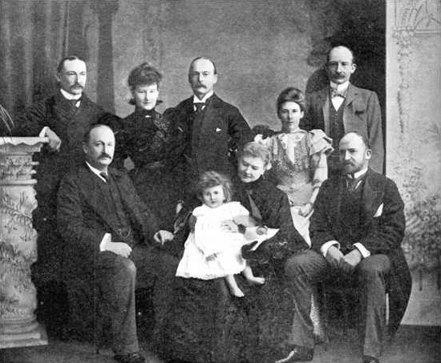
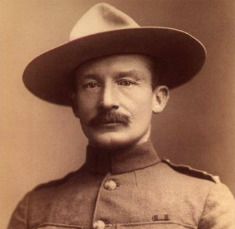
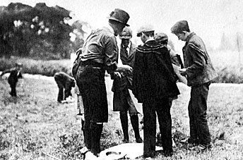
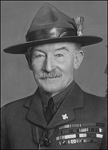
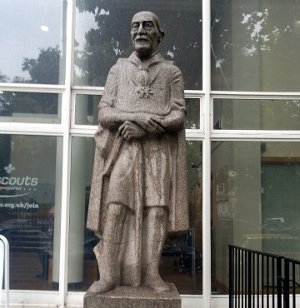

Robert Baden-Powell Fundador del Movimiento Scout Mundial
Robert Stephenson Smyth Baden-Powell, conocido como B-P, nació en Paddington, Londres el 22 de febrero de 1857. Fue el octavo de diez hijos de Baden, Profesor en la Universidad de Oxford, y Henrietta Powell. Su padre murió cuando B-P tenía solamente tres años, dejando a la familia en una situación desafiante.
B-P recibió sus primeras lecciones de su madre y posteriormente asistió al Rose Hill School, en donde se le otorgó una beca para asistir al Charterhouse School. Siempre se mostraba deseoso de aprender nuevas habilidades y tocaba el piano y el violín. Durante su estadía en Charterhouse comenzó a explotar su interés en las artes de la exploración y la talla en madera.
En los bosques alrededor del colegio B-P se escondía de sus profesores y se dedicaba a cazar y a cocinar conejos, teniendo mucho cuidado de no dar su ubicación con el humo. Las vacaciones tampoco eran desperdiciadas. Con sus hermanos siempre estaban en búsqueda de aventura. En una ocasión hicieron una expedición de navegación en la costa sur de Inglaterra. En otra ocasión, siguieron el Támesis hasta su nacimiento en canoa. Con estas actividades Baden-Powell aprendía las artes y manualidades que le serían útiles profesionalmente.
A pesar de no haber sido reconocido por sus calificaciones, B-P hizo los exámenes para enlistarse en el Ejército y ocupó el segundo lugar entre cientos de aspirantes. Fue comisionado directamente al 13 de Húsares, evitando el entrenamiento de oficial. Posteriormente se convirtió en su Coronel Honorario.
Vida Militar
En 1876 fue a la India como joven oficial del ejército y se especializó en exploración, confección de mapas y reconocimientos. Sus éxitos rápidamente lo llevaron a formar a otros soldados. Los métodos de B-P eran poco ortodoxos para la época; las pequeñas unidades y las patrullas trabajando juntas bajo el liderazgo de una sola persona, con reconocimientos especiales para aquellos que lo hicieran bien. Por demostraciones de capacidad, B-P otorgó a sus aprendices insignias que semejaban el diseño tradicional del norte de una brújula. Hoy, la insignia del Scout universal es muy similar.
Posteriormente fue trasladado a los Balcanes, Sudáfrica y Malta. Regresó a África a ayudar a defender el poblado de Mafeking durante los 217 días que estuvo sitiado en los inicios de la Guerra del Boer. Esta experiencia le permitió a B-P probar las habilidades de exploración. El coraje y la creatividad demostradas por los jóvenes soldados en Mafeking le causaron una impresión duradera. A su vez, sus hazañas causaron un fuerte impacto en Inglaterra.
Al regresar a su casa en 1903 encontró que se había convertido en un héroe nacional. También descubrió que el manual que había escrito para los soldados (“Ayudas para la exploración”) estaba siendo utilizado por líderes juveniles y profesores de todo el país para enseñar observación y talla en madera.
Dictó charlas en reuniones y en encuentros y mientras estaba en la “Brigada de Niños”, su Fundador, Sir William Smith, le solicitó un esquema que permitiera variedad en la formación de niños como buenos ciudadanos.
Inicios del Movimiento
B-P se concentró en reescribir “Ayudas para la exploración”, en esta ocasión para una audiencia más joven. En 1907 hizo un campamento experimental en la Isla Brownsea en Dorset, con el fin de probar sus ideas. Reunió 22 niños, algunos de colegios privados y otros de hogares de familias trabajadoras, y los llevó a acampar bajo su liderazgo. Se ha considerado esta actividad como el punto de inicio del Movimiento Scout.
“Escultismo para Muchachos” se publicó en 1908 en seis entregas quincenales. Las ventas del libro fueron muy grandes. Los Jóvenes formaban Patrullas Scout entre ellos para poner en uso las ideas. Lo que se pretendió fuera una ayuda de formación para organizaciones existentes, se convirtió en el manual de un Movimiento nuevo y mundial. “Escultismo para Muchachos” desde entonces se ha traducido a la mayoría de idiomas del mundo.
De manera espontánea, los jóvenes comenzaron a formar Tropas Scout por todo el país. En septiembre de 1908 Baden-Powell tuvo que crear una oficina para manejar el alto número de inquietudes que estaban llegando. El Movimiento Scout se difundió rápidamente hasta que se estableció prácticamente en todo el mundo.
Se retiró del ejército en 1910, a la edad de 53 años, acatando el consejo del Rey Eduardo VII quien le dijo que le prestaría un mejor servicio a su país en el Movimiento Scout.
Con todo su entusiasmo y energía dirigidos al desarrollo de los Boy Scouts y de las Guías Scout, viajó por todo el mundo con el fin de promover el crecimiento e inspirar.
En 1912 contrajo matrimonio con Olave Soames quien fue su constante colaboradora y compañera en todo su trabajo, y quien se involucró mucho en con las Guías y con el Movimiento Scout. Tuvieron tres hijos, (Peter, Heather y Betty). A Lady Olave Baden-Powell posteriormente se le conoció como Jefa Guía Mundial.
Jefe Scout Mundial
El primer Jamboree Scout Mundial se llevó a cabo en Olympia, Londres en 1920. Durante la ceremonia de clausura Baden-Powell fue aclamado de forma unánime como Jefe Scout Mundial.
Durante el Tercer Jamboree Mundial, que se llevó a cabo también en Inglaterra, el Príncipe de Gales anunció que a Baden – Powell se le otorgaría un título por parte de S.M. el Rey. B-P tomó el título de Lord Baden-Powell de Gilwell; el Parque Gilwell es el centro de entrenamiento internacional que él había creado para los dirigentes Scout.
B-P escribió al menos 32 libros. Recibió títulos honorarios de al menos seis universidades. Adicionalmente le fueron otorgados 28 ordenes y medallas extranjeras y 19 reconocimientos de Scouts de otros países
En 1938, por quebrantos de salud, B-P regresó a África, que había significado mucho en su vida, para vivir en un semi retiro en Nyeri, Kenya. Aún allá, le fue muy difícil frenar sus energías y continuó produciendo libros y ensayos.
En enero 8 de 1941, a la edad de 83 años B-P falleció. Fue enterrado en una sencilla tumba en Nyeri con vista al Monte Kenya. En su lápida se leen las palabras “Robert Baden-Powell, Jefe Scout del Mundo” coronadas por las insignias de los Boy Scouts y de las Guías Scout. Lady Olave Baden-Powell continuó con su trabajo, promoviendo el Movimiento Scout por todo el mundo hasta su muerte en 1977. Ella se encuentra enterrada al lado de Lord Baden-Powell en Nyeri.
B-P preparó un mensaje de despedida para sus Scouts que debería ser publicado después de su muerte. Su recomendación de “intente y deje el mundo un poco mejor de cómo lo encontró” es tan relevante, inclusive más, hoy y continúa inspirando a los jóvenes de todo el mundo.